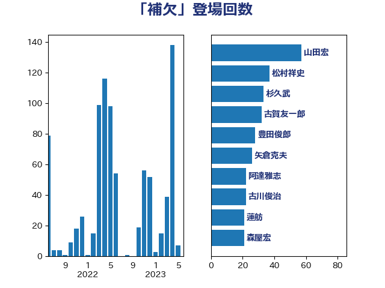

単語「補欠」

| 山田宏 | 自由民主党 | 57 回 |
| 松村祥史 | 自由民主党 | 37 回 |
| 杉久武 | 公明党 | 33 回 |
| 古賀友一郎 | 自由民主党 | 32 回 |
| 豊田俊郎 | 自由民主党 | 28 回 |
| 矢倉克夫 | 公明党 | 26 回 |
| 阿達雅志 | 自由民主党 | 22 回 |
| 古川俊治 | 自由民主党 | 22 回 |
| 蓮舫 | 立憲民主党 | 21 回 |
| 森屋宏 | 自由民主党 | 21 回 |
| 斎藤嘉隆 | 立憲民主党 | 21 回 |
| 石橋通宏 | 立憲民主党 | 20 回 |
| 宮沢洋一 | 自由民主党 | 20 回 |
| 鶴保庸介 | 自由民主党 | 18 回 |
| 馬場成志 | 自由民主党 | 18 回 |
| 長谷川岳 | 自由民主党 | 18 回 |
| 酒井庸行 | 自由民主党 | 18 回 |
| 舟山康江 | 国民民主党 | 17 回 |
| 平木大作 | 公明党 | 16 回 |
| 佐藤信秋 | 自由民主党 | 16 回 |
| 青木一彦 | 自由民主党 | 15 回 |
| 三原じゅん子 | 自由民主党 | 15 回 |
| 松沢成文 | 日本維新の会 | 14 回 |
| 山谷えり子 | 自由民主党 | 14 回 |
| 河野義博 | 公明党 | 13 回 |
| 徳永エリ | 立憲民主党 | 12 回 |
| 高橋克法 | 自由民主党 | 11 回 |
| 佐々木さやか | 公明党 | 11 回 |
| 山下雄平 | 自由民主党 | 9 回 |
| 古賀之士 | 立憲民主党 | 9 回 |
| 古川直季 | 自由民主党 | 9 回 |
| 滝沢求 | 自由民主党 | 7 回 |
| 吉川沙織 | 立憲民主党 | 7 回 |
| 長浜博行 | 無所属 | 6 回 |
| 福山哲郎 | 立憲民主党 | 6 回 |
| おおつき紅葉 | 立憲民主党 | 6 回 |
| 青木愛 | 立憲民主党 | 5 回 |
| 野村哲郎 | 自由民主党 | 5 回 |
| 松下新平 | 自由民主党 | 5 回 |
| 長峯誠 | 自由民主党 | 4 回 |
| 石井浩郎 | 自由民主党 | 4 回 |
| 猪口邦子 | 自由民主党 | 4 回 |
| 新妻秀規 | 公明党 | 4 回 |
| 山口俊一 | 自由民主党 | 4 回 |
| 寺田稔 | 自由民主党 | 4 回 |
| 太田房江 | 自由民主党 | 4 回 |
| 鈴木宗男 | 日本維新の会 | 3 回 |
| 野田国義 | 立憲民主党 | 3 回 |
| 福岡資麿 | 自由民主党 | 3 回 |
| 羽田次郎 | 立憲民主党 | 2 回 |
| 秋葉賢也 | 自由民主党 | 2 回 |
| 渡辺創 | 立憲民主党 | 2 回 |
| 森山浩行 | 立憲民主党 | 2 回 |
| 山本香苗 | 公明党 | 2 回 |
| 宮口治子 | 立憲民主党 | 2 回 |
| 北村経夫 | 自由民主党 | 2 回 |
| 上月良祐 | 自由民主党 | 2 回 |
| 三浦信祐 | 公明党 | 2 回 |
| 芳賀道也 | 国民民主党 | 1 回 |
| 羽生田俊 | 自由民主党 | 1 回 |
| 田村智子 | 日本共産党 | 1 回 |
| 滝波宏文 | 自由民主党 | 1 回 |
| 源馬謙太郎 | 立憲民主党 | 1 回 |
| 浜野喜史 | 国民民主党 | 1 回 |
| 永岡桂子 | 自由民主党 | 1 回 |
| 森本真治 | 立憲民主党 | 1 回 |
| 松本剛明 | 自由民主党 | 1 回 |
| 東徹 | 日本維新の会 | 1 回 |
| 杉尾秀哉 | 立憲民主党 | 1 回 |
| 本村伸子 | 日本共産党 | 1 回 |
| 岸田文雄 | 自由民主党 | 1 回 |
| 小野泰輔 | 日本維新の会 | 1 回 |
| 室井邦彦 | 日本維新の会 | 1 回 |
| 大塚耕平 | 国民民主党 | 1 回 |